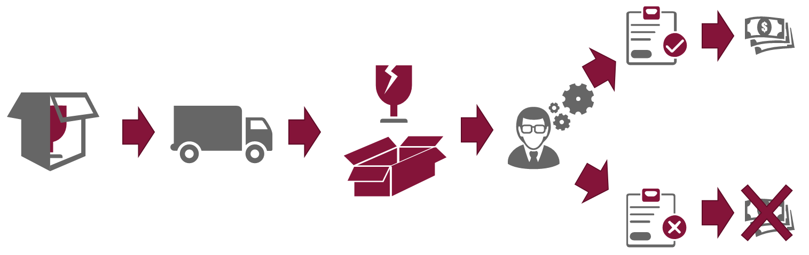
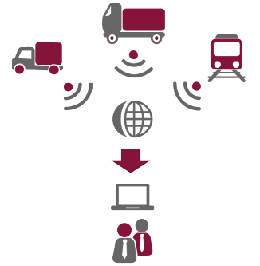
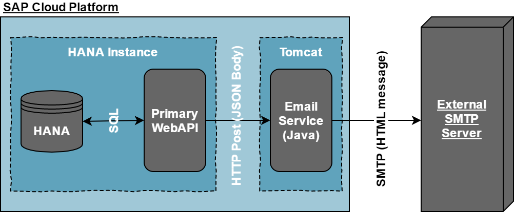
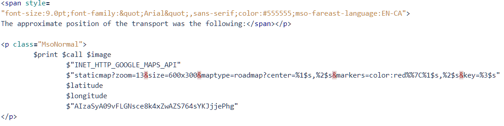
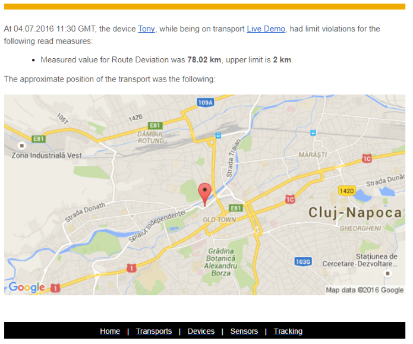
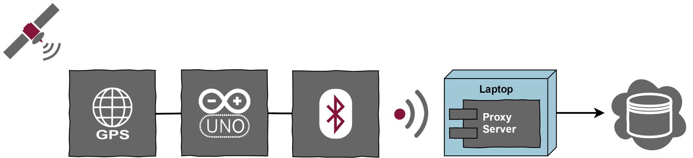

SMTA
Shipment management, tracking and analytics
SMTA
Background
Transport companies have to pay a periodical amount to insurers. This amount is determined based on the risk.
Shipment insurance policies enforce certain conditions (route, schedule, etc.).
When the goods are damaged, the insurance company must check if these conditions were respected.
SMTA
Goals
Help isurers check for insurance condition breaches and calculate payment amounts.
Create a platform which allows users to manage shipments, tracking devices and sensors.
Create tracking devices for collecting the data from transports.
Enable real-time tracking and notification capabilities.
Use the data collected to expose statistics and analytic scenarios.
SMTA
Overview
Two device prototypes were made: an Arduino board and an Android application.
The platform for collecting data, monitoring, tracking, etc. was built with SAP Cloud Platform.
All user interfaces were created with SAP UI5.
SMTA
Web Apps
All the cloud web apps are deployed to the Fiori Launchpad.
They are grouped based on usage: Administration, Tracking, Analytics.
Administration Apps
Responsible for managing the transports, devices, sensors, routes, schedules, organizations and people.
We can define conversions and virtual sensors.
Limits can be defined (when breached, an email is sent).
The overview app shows in real time all the active transports and allows scrolling back in time.
The trace can be used to see an animation of the transport's evolution.
Analytics Apps
Cover several analytical scenarios.

Viewing the evolution of a single transport.
Comparing several transports against each other.
Generating system-wide statistics.
Performing simple forecasts (SAP HANA PAL).
SMTA
Mail Service
Is implemented as a REST-based micro-service that exposes a configurable list of email addresses.
Overview
A custom grammar was created to allow users to define custom HTML-based email templates.
Email Sample
SMTA
Devices
Android App
Uses the built-in GPS and sensors.
Works both online and offline.
Arduino Board
Connected to GPS and Bluetooth modules.
It communicates with a Bluetooth enabled device which forwards data to the cloud.
